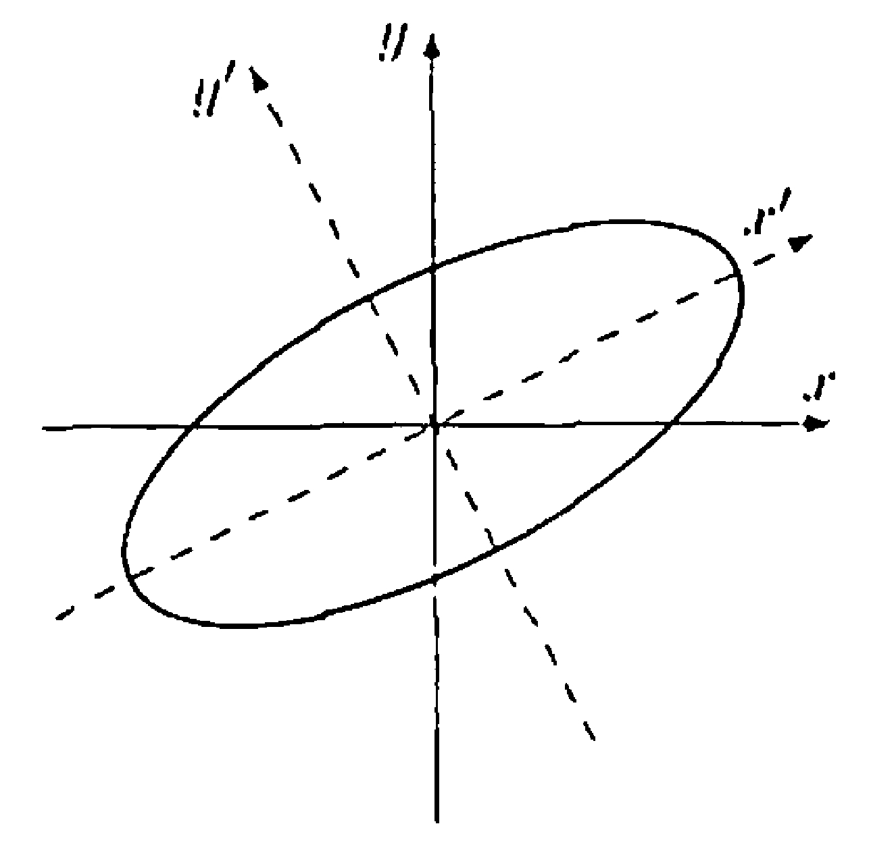

§ 31. Unitary and Orthogonal Operators and Their Matrices¶
We assume that all vector spaces are over the field \(F\), where \(F\) denotes either \(\mathbb{R}\) or \(\mathbb{C}\).
Unitary and Orthogonal Operators¶
Definition 31.1 : Unitary and Orthogonal Operator
Let \(T\) be a linear operator on a finite-dimensional inner product space \(V\) (over \(F\)). If \(\|T(x)\|=\|x\|\) for all \(x \in V\), we call \(T\) a unitary operator if \(F=\mathbb{C}\) and an orthogonal operator if \(F=\mathbb{R}\).
It should be noted that, in the infinite-dimensional case, an operator satisfying the preceding norm requirement is generally called an isometry. If, in addition, the operator is onto (the condition guarantees one-to-one), then the operator is called a unitary or orthogonal operator.
Lemma 31.2
Let \(U\) be a self-adjoint operator on a finite-dimensional inner product space \(V\). If \(\langle x, U(x)\rangle=0\) for all \(x \in V\), then \(U=T_{0}\).
Proof
By either Theorem 30.6 or Theorem 30.12, we may choose an orthonormal basis \(\beta\) for \(V\) consisting of eigenvectors of \(U\). If \(x \in \beta\), then \(U(x)=\lambda x\) for some \(\lambda\). Thus
so \(\overline{\lambda}=0\). Hence \(U(x)=0\) for all \(x \in \beta\), and thus \(U=T_{0}\).
Theorem 31.3 : Equivalent characterizations of unitary and orthogonal operators.
Let \(T\) be a linear operator on a finite-dimensional inner product space \(V\). Then the following statements are equivalent.
- (a) \(T T^{*}=T^{*} T=I\).
- (b) \(\langle T(x), T(y)\rangle=\langle x, y\rangle\) for all \(x, y \in V\).
- (c) If \(\beta\) is an orthonormal basis for \(V\), then \(T(\beta)\) is an orthonormal basis for \(V\).
- (d) There exists an orthonormal basis \(\beta\) for \(V\) such that \(T(\beta)\) is an orthonormal basis for \(V\).
- (e) \(\|T(x)\|=\|x\|\) for all \(x \in V\).
Thus all the conditions above are equivalent to the definition of a unitary or orthogonal operator. From (a), it follows that unitary or orthogonal operators are normal.
Proof
-
(a) \(\Rightarrow\) (b) Let \(x, y \in V\). Then \(\langle x, y\rangle=\left\langle T^{*} T(x), y\right\rangle=\langle T(x), T(y)\rangle\).
-
(b) \(\Rightarrow\) (c) Let \(\beta=\left\{v_{1}, v_{2}, \ldots, v_{n}\right\}\) be an orthonormal basis for \(V\); so \(T(\beta)=\left\{T\left(v_{1}\right), T\left(v_{2}\right), \ldots, T\left(v_{n}\right)\right\}\). It follows that \(\left\langle T\left(v_{i}\right), T\left(v_{j}\right)\right\rangle=\left\langle v_{i}, v_{j}\right\rangle=\delta_{i j}\). Therefore \(T(\beta)\) is an orthonormal basis for \(V\).
-
(c) \(\Rightarrow\) (d) Obvious.
-
(d) \(\Rightarrow\) (e) Let \(x \in V\), and let \(\beta=\left\{v_{1}, v_{2}, \ldots, v_{n}\right\}\). Now
\[ x=\sum_{i=1}^{n} a_{i} v_{i} \]for some scalars \(a_{i}\), and so
\[ \begin{aligned} \|x\|^{2} & =\left\langle\sum_{i=1}^{n} a_{i} v_{i}, \sum_{j=1}^{n} a_{j} v_{j}\right\rangle=\sum_{i=1}^{n} \sum_{j=1}^{n} a_{i} \overline{a_{j}}\left\langle v_{i}, v_{j}\right\rangle \\ & =\sum_{i=1}^{n} \sum_{j=1}^{n} a_{i} \overline{a_{j}} \delta_{i j}=\sum_{i=1}^{n}\left|a_{i}\right|^{2} \end{aligned} \]since \(\beta\) is orthonormal. Applying the same manipulations to
\[ T(x)=\sum_{i=1}^{n} a_{i} T\left(v_{i}\right) \]and using the fact that \(T(\beta)\) is also orthonormal, we obtain
\[ \|T(x)\|^{2}=\sum_{i=1}^{n}\left|a_{i}\right|^{2} . \]Hence \(\|T(x)\|=\|x\|\).
-
(e) \(\Rightarrow\) (a) For any \(x \in V\), we have
\[ \langle x, x\rangle=\|x\|^{2}=\|T(x)\|^{2}=\langle T(x), T(x)\rangle=\left\langle x, T^{*} T(x)\right\rangle \]So \(\left\langle x,\left(I-T^{*} T\right)(x)\right\rangle=0\) for all \(x \in V\). Let \(U=I-T^{*} T\); then \(U\) is self-adjoint, and \(\langle x, U(x)\rangle=0\) for all \(x \in V\). Hence, by Lemma 31.2, we have \(T_{0}=U=I-T^{*} T\), and therefore \(T^{*} T=I\). Since \(V\) is finite-dimensional, we may use Exercise 11.10 to conclude that \(T T^{*}=I\).
Corollary 31.4 : Self-adjoint orthogonal operators have an orthonormal eigenbasis with eigenvalues of absolute value \(1\) in finite-dimensional real inner product space.
Let \(T\) be a linear operator on a finite-dimensional real inner product space \(V\). Then \(V\) has an orthonormal basis of eigenvectors of \(T\) with corresponding eigenvalues of absolute value \(1\) if and only if \(T\) is both self-adjoint and orthogonal.
Proof
-
(\(\Rightarrow\)) Suppose that \(V\) has an orthonormal basis \(\left\{v_{1}, v_{2}, \ldots, v_{n}\right\}\) such that \(T\left(v_{i}\right)=\lambda_{i} v_{i}\) and \(\left|\lambda_{i}\right|=1\) for all \(i\). By Theorem 30.12, \(T\) is self-adjoint. Thus \(\left(T T^{*}\right)\left(v_{i}\right)=T\left(\lambda_{i} v_{i}\right)=\lambda_{i} \lambda_{i} v_{i}=\left|\lambda_{i}\right|^{2} v_{i}=v_{i}\) for each \(i\). So \(T T^{*}=I\), and again by Exercise 11.10, \(T\) is orthogonal by Theorem 31.3(a).
-
(\(\Leftarrow\)) If \(T\) is self-adjoint, then, by Theorem 30.12, we have that \(V\) possesses an orthonormal basis \(\left\{v_{1}, v_{2}, \ldots, v_{n}\right\}\) such that \(T\left(v_{i}\right)=\lambda_{i} v_{i}\) for all \(i\). If \(T\) is also orthogonal, we have
\[ \left|\lambda_{i}\right| \cdot\left\|v_{i}\right\|=\left\|\lambda_{i} v_{i}\right\|=\left\|T\left(v_{i}\right)\right\|=\left\|v_{i}\right\| ; \]so \(\left|\lambda_{i}\right|=1\) for every \(i\).
Corollary 31.5 : Unitary operators have an orthonormal eigenbasis with eigenvalues of absolute value \(1\) in finite-dimensional complex inner product space.
Let \(T\) be a linear operator on a finite-dimensional complex inner product space \(V\). Then \(V\) has an orthonormal basis of eigenvectors of \(T\) with corresponding eigenvalues of absolute value \(1\) if and only if \(T\) is unitary.
Proof
-
(\(\Rightarrow\)) Suppose that \(V\) has an orthonormal basis \(\left\{v_{1}, v_{2}, \ldots, v_{n}\right\}\) such that \(T\left(v_{i}\right)=\lambda_{i} v_{i}\) and \(\left|\lambda_{i}\right|=1\) for all \(i\). Thus \(\left(T T^{*}\right)\left(v_{i}\right)=T\left(\overline{\lambda_{i}} v_{i}\right)=\overline{\lambda_{i}} \lambda_{i} v_{i}=\left|\lambda_{i}\right|^{2} v_{i}=v_{i}\) for each \(i\). So \(T T^{*}=I\), and again by Exercise 11.10, \(T\) is unitary by Theorem 31.3(a).
-
(\(\Leftarrow\)) If \(T\) is unitary, then \(T\) is normal by Theorem 31.3(a), and by Theorem 30.12, we have that \(V\) possesses an orthonormal basis \(\left\{v_{1}, v_{2}, \ldots, v_{n}\right\}\) such that \(T\left(v_{i}\right)=\lambda_{i} v_{i}\) for all \(i\). Also, since \(T\) is unitary, we have
\[ \left|\lambda_{i}\right| \cdot\left\|v_{i}\right\|=\left\|\lambda_{i} v_{i}\right\|=\left\|T\left(v_{i}\right)\right\|=\left\|v_{i}\right\| ; \]so \(\left|\lambda_{i}\right|=1\) for every \(i\).
Example 31.6 : Rotation is orthogonal, but not self-adjoint.
Let \(T: \mathbb{R}^{2} \rightarrow \mathbb{R}^{2}\) be a rotation by \(\theta\), where \(0<\theta<\pi\). It is clear geometrically that \(T\) "preserves length," that is, that \(\|T(x)\|=\|x\|\) for all \(x \in \mathbb{R}^{2}\). The fact that rotations by a fixed angle preserve perpendicularity not only can be seen geometrically but now follows from (b) of Theorem 31.3. Perhaps the fact that such a transformation preserves the inner product is not so obvious; however, we obtain this fact from (b) also. Finally, an inspection of the matrix representation of \(T\) with respect to the standard ordered basis, which is
reveals that \(T\) is not self-adjoint for the given restriction on \(\theta\). As we mentioned earlier, this fact also follows from the geometric observation that \(T\) has no eigenvectors and from Theorem 30.5. It is seen easily from the preceding matrix that \(T^{*}\) is the rotation by \(-\theta\).
Definition 31.7 : Reflection of \(\mathbb{R}^{2}\) About a Line
Let \(L\) be a one-dimensional subspace of \(\mathbb{R}^{2}\). We may view \(L\) as a line in the plane through the origin. A linear operator \(T\) on \(\mathbb{R}^{2}\) is called a reflection of \(\mathbb{R}^{2}\) about \(L\) if \(T(x)=x\) for all \(x \in L\) and \(T(x)=-x\) for all \(x \in L^{\perp}\).
Example 31.8 : Reflection is orthogonal, and self-adjoint.
Let \(T\) be a reflection of \(\mathbb{R}^{2}\) about a line \(L\) through the origin. We show that \(T\) is an orthogonal operator. Select vectors \(v_{1} \in L\) and \(v_{2} \in L^{\perp}\) such that \(\left\|v_{1}\right\|=\left\|v_{2}\right\|=1\). Then \(T\left(v_{1}\right)=v_{1}\) and \(T\left(v_{2}\right)=-v_{2}\). Thus \(v_{1}\) and \(v_{2}\) are eigenvectors of \(T\) with corresponding eigenvalues \(1\) and \(-1\), respectively. Furthermore, \(\left\{v_{1}, v_{2}\right\}\) is an orthonormal basis for \(\mathbb{R}^{2}\). It follows that \(T\) is an orthogonal operator by Corollary 31.4.
Unitary and Orthogonal Matrices¶
Definition 31.9 : Orthogonal Matrix / Unitary Matrix
A square matrix \(A\) is called an orthogonal matrix if \(A^{t} A=A A^{t}=I\) and unitary if \(A^{*} A=A A^{*}=I\).
Theorem 31.10 : Rows and columns of orthogonal / unitary matrices form orthonormal bases for \(F^{n}\).
The condition \(A A^{*}=I\) is equivalent to the statement that the rows of \(A\) form an orthonormal basis for \(F^{n}\).
Also, the condition \(A^{*} A=I\) is equivalent to the statement that the columns of \(A\) form an orthonormal basis for \(F^{n}\).
Proof
Let \(A A^{*}=I\).
The last term represents the inner product of the \(i\) th and \(j\) th rows of \(A\).
The proof for the statement about the columns of \(A\) and the condition \(A^{*} A=I\) is the same.
Theorem 31.11 : Unitary [Orthogonal] operators and unitary [orthogonal] matrix representations
Let \(V\) be a finite-dimensional inner product space over \(F\) (where \(F=\mathbb{C}\) or \(F=\mathbb{R}\)), and let \(T\) be a linear operator on \(V\). If \(\beta\) is an orthonormal basis for \(V\) and \(A=[T]_{\beta}\), then \(T\) is unitary [orthogonal] if and only if \(A\) is unitary [orthogonal].
Proof
Fix an orthonormal basis \(\beta\) for \(V\) and let \(A=[T]_{\beta}\). Because \(\beta\) is orthonormal, Theorem 29.6 gives
Also,
Assume first that \(T\) is unitary [orthogonal]. By definition, \(T^{*}T=I\) (and hence also \(TT^{*}=I\)). Taking \(\beta\)-matrices,
Thus \(A\) is unitary [orthogonal].
Conversely, assume that \(A\) is unitary [orthogonal], so \(A^{*}A=I\) (and hence \(AA^{*}=I\)). Then
Since two linear operators are equal if and only if their matrices relative to the same basis are equal, it follows that \(T^{*}T=I\) (and similarly \(TT^{*}=I\)). Therefore \(T\) is unitary [orthogonal].
Example 31.12 : Matrix representation of a reflection in \(\mathbb{R}^{2}\).
Let \(T\) be a reflection of \(\mathbb{R}^{2}\) about a line \(L\) through the origin, let \(\beta\) be the standard ordered basis for \(\mathbb{R}^{2}\), and let \(A=[T]_{\beta}\). Then \(T=L_{A}\). Since \(T\) is an orthogonal operator and \(\beta\) is an orthonormal basis, \(A\) is an orthogonal matrix. We describe \(A\).
Suppose that \(\alpha\) is the angle from the positive \(x\)-axis to \(L\). Let \(v_{1}=(\cos \alpha, \sin \alpha)\) and \(v_{2}=(-\sin \alpha, \cos \alpha)\). Then \(\left\|v_{1}\right\|=\left\|v_{2}\right\|=1\), \(v_{1} \in L\), and \(v_{2} \in L^{\perp}\). Hence \(\gamma=\left\{v_{1}, v_{2}\right\}\) is an orthonormal basis for \(\mathbb{R}^{2}\). Because \(T\left(v_{1}\right)=v_{1}\) and \(T\left(v_{2}\right)=-v_{2}\), we have
Let
By Corollary 12.9,
Unitary and Orthogonal Diagonalization¶
Definition 31.13 : Unitary Equivalence / Orthogonal Equivalence
\(A\) and \(B\) are unitarily equivalent [orthogonally equivalent] if and only if there exists a unitary [orthogonal] matrix \(P\) such that \(A=P^{*} B P\).
Theorem 31.14 : Unitary and orthogonal equivalence are equivalence relations.
Define a relation on \(\mathrm{M}_{n \times n}(\mathbb{C})\) by declaring \(A \sim B\) if and only if there exists a unitary matrix \(P\) such that
Then \(\sim\) is an equivalence relation.
Proof
We prove the unitary case; the orthogonal case is identical with \(P^{*}\) replaced by \(P^{t}\).
-
Reflexive. Let \(A \in \mathrm{M}_{n \times n}(\mathbb{C})\). Take \(P=I\), which is unitary and satisfies \(I^{*}AI=A\). Hence \(A \sim A\).
-
Symmetric. Assume \(A \sim B\). Then there exists a unitary matrix \(P\) such that \(A=P^{*}BP\). Since \(P\) is unitary, \(P^{-1}=P^{*}\) and therefore \((P^{*})^{*}=P\). Multiply the equality \(A=P^{*}BP\) on the left by \(P\) and on the right by \(P^{*}\) to obtain
\[ PAP^{*}=B. \]Let \(Q=P^{*}\), which is unitary. Then \(B=Q^{*}AQ\), so \(B \sim A\).
-
Transitive. Assume \(A \sim B\) and \(B \sim C\). Then there exist unitary matrices \(P\) and \(Q\) such that
\[ A=P^{*}BP \quad\text{and}\quad B=Q^{*}CQ. \]Substituting the second equation into the first gives
\[ A=P^{*}(Q^{*}CQ)P=(QP)^{*}C(QP), \]using \((QP)^{*}=P^{*}Q^{*}\). Since the product of unitary matrices is unitary, \(QP\) is unitary. Hence \(A \sim C\).
Therefore \(\sim\) is reflexive, symmetric, and transitive, so it is an equivalence relation.
Theorem 31.15 : Unitary diagonalization of complex normal matrices.
Let \(A\) be a complex \(n \times n\) matrix. Then \(A\) is normal if and only if \(A\) is unitarily equivalent to a diagonal matrix.
Proof
-
(\(\Rightarrow\)) Suppose that \(A\) is normal. From Theorem 30.6, we know that for a complex normal matrix \(A\) there exists an orthonormal basis \(\beta\) of \(\mathbb{C}^{n}\) consisting of eigenvectors of \(A\).
By Corollary 12.9, we have
\[ [L_A]_{\beta}=D=Q^{-1} A Q. \]Because the columns of \(Q\) form an orthonormal basis of \(\mathbb{C}^{n}\), we also have
\[ Q^{-1}=Q^{*}, \]so the similarity relation becomes
\[ D=Q^{*} A Q \quad\text{or equivalently}\quad A=Q D Q^{*}. \]Thus \(A\) is unitarily equivalent to the diagonal matrix \(D\).
-
(\(\Leftarrow\)) Suppose that \(A=P^{*} D P\), where \(P\) is a unitary matrix and \(D\) is a diagonal matrix. Then
\[ A A^{*}=\left(P^{*} D P\right)\left(P^{*} D P\right)^{*} =\left(P^{*} D P\right)\left(P^{*} D^{*} P\right) =P^{*} D D^{*} P . \]Similarly, \(A^{*} A=P^{*} D^{*} D P\). Since \(D\) is a diagonal matrix, however, we have \(D D^{*}=D^{*} D\). Thus \(A A^{*}=A^{*} A\).
Theorem 31.16 : Orthogonal diagonalization of real symmetric matrices.
Let \(A\) be a real \(n \times n\) matrix. Then \(A\) is symmetric if and only if \(A\) is orthogonally equivalent to a real diagonal matrix.
Proof
-
(\(\Rightarrow\)) Suppose that \(A\) is symmetric. From Theorem 30.12, we know that for a real symmetric matrix \(A\) there exists an orthonormal basis \(\beta\) of \(\mathbb{R}^{n}\) consisting of eigenvectors of \(A\).
By Corollary 12.9, we have
\[ [L_A]_{\beta}=D=Q^{-1} A Q. \]Because the columns of \(Q\) form an orthonormal basis of \(\mathbb{R}^{n}\), \(Q\) is orthogonal, so
\[ Q^{-1}=Q^{t}. \]Hence
\[ D=Q^{t} A Q \quad\text{or equivalently}\quad A=Q D Q^{t}. \]Therefore \(A\) is orthogonally equivalent to the (real) diagonal matrix \(D\).
-
(\(\Leftarrow\)) Suppose that \(A=Q^{t} D Q\), where \(Q\) is orthogonal and \(D\) is a real diagonal matrix. Then
\[ A^{t}=\left(Q^{t} D Q\right)^{t}=Q^{t} D^{t} Q. \]Because \(D\) is diagonal with real entries, \(D^{t}=D\). Hence
\[ A^{t}=Q^{t} D Q=A, \]so \(A\) is symmetric.
Example 31.17 : Orthogonal diagonalization computation of a real symmetric matrix.
Let
Since \(A\) is symmetric, Theorem 31.16 tells us that \(A\) is orthogonally equivalent to a diagonal matrix. We find an orthogonal matrix \(P\) and a diagonal matrix \(D\) such that \(P^{t} A P=D\).
To find \(P\), we obtain an orthonormal basis of eigenvectors. It is easy to show that the eigenvalues of \(A\) are \(2\) and \(8\). The set \(\{(-1,1,0),(-1,0,1)\}\) is a basis for the eigenspace corresponding to \(2\). Because this set is not orthogonal, we apply the Gram-Schmidt process to obtain the orthogonal set \(\left\{(-1,1,0),-\frac{1}{2}(1,1,-2)\right\}\). The set \(\{(1,1,1)\}\) is a basis for the eigenspace corresponding to \(8\). Notice that \((1,1,1)\) is orthogonal to the preceding two vectors, as predicted by Theorem 30.5(d). Taking the union of these two bases and normalizing the vectors, we obtain the following orthonormal basis for \(\mathbb{R}^{3}\) consisting of eigenvectors of \(A\):
Thus one possible choice for \(P\) is
Theorem 31.18 : Matrix form of Schur's theorem
Let \(A \in \mathrm{M}_{n \times n}(F)\) be a matrix whose characteristic polynomial splits over \(F\).
- (a) If \(F=\mathbb{C}\), then \(A\) is unitarily equivalent to a complex upper triangular matrix.
- (b) If \(F=\mathbb{R}\), then \(A\) is orthogonally equivalent to a real upper triangular matrix.
Rigid Motions¶
Definition 31.19 : Rigid Motion
Let \(V\) be a real inner product space. A function \(f: V \rightarrow V\) is called a rigid motion if
for all \(x, y \in V\).
Theorem 31.20 : Examples and closure properties of rigid motions
Let \(V\) be a real inner product space.
- (a) Any orthogonal operator on a finite-dimensional real inner product space is a rigid motion.
- (b) Any translation on \(V\) is a rigid motion. That is, if \(v_{0}\in V\) and \(g(x)=x+v_{0}\), then \(g\) is a rigid motion.
- (c) If \(f,g:V\to V\) are rigid motions, then \(g\circ f\) is a rigid motion.
- (d) In particular, if \(T:V\to V\) is orthogonal (with \(V\) finite-dimensional) and \(v_{0}\in V\), then the map \(h(x)=T(x)+v_{0}\) is a rigid motion.
Proof
-
(a) Let \(T:V\to V\) be orthogonal. Then for all \(x,y\in V\),
\[ \|T(x)-T(y)\|=\|T(x-y)\|=\|x-y\|. \] -
(b) Let \(g(x)=x+v_{0}\). Then for all \(x,y\in V\),
\[ \|g(x)-g(y)\|=\|(x+v_{0})-(y+v_{0})\|=\|x-y\|. \] -
(c) Let \(f\) and \(g\) be rigid motions. Then for all \(x,y\in V\),
\[ \|(g\circ f)(x)-(g\circ f)(y)\| =\|g(f(x))-g(f(y))\| =\|f(x)-f(y)\| =\|x-y\|, \]using first that \(g\) is a rigid motion and then that \(f\) is a rigid motion.
-
(d) Define \(h(x)=T(x)+v_{0}\). Then \(h=g\circ T\) where \(g\) is the translation by \(v_{0}\). By parts (a) and (b), both \(T\) and \(g\) are rigid motions, and by part (c) their composite \(h\) is a rigid motion.
Theorem 31.21 : Decomposition of rigid motions.
Let \(f: V \rightarrow V\) be a rigid motion on a finite-dimensional real inner product space \(V\). Then there exists a unique orthogonal operator \(T\) on \(V\) and a unique translation \(g\) on \(V\) such that \(f=g \circ T\).
Any orthogonal operator is a special case of this composite, in which the translation is by \(0\). Any translation is also a special case, in which the orthogonal operator is the identity operator.
Proof
Let \(T: V \rightarrow V\) be defined by \(T(x)=f(x)-f(0)\) for all \(x \in V\). We show that \(T\) is an orthogonal operator, from which it follows that \(f=g \circ T\), where \(g\) is the translation by \(f(0)\). Observe that \(T\) is the composite of \(f\) and the translation by \(-f(0)\); hence \(T\) is a rigid motion. Furthermore, for any \(x \in V\)
and consequently \(\|T(x)\|=\|x\|\) for any \(x \in V\). Thus for any \(x, y \in V\),
and
But \(\|T(x)-T(y)\|^{2}=\|x-y\|^{2}\); so \(\langle T(x), T(y)\rangle=\langle x, y\rangle\) for all \(x, y \in V\). We are now in a position to show that \(T\) is a linear transformation. Let \(x, y \in V\), and let \(a \in \mathbb{R}\). Then
Thus \(T(x+a y)=T(x)+a T(y)\), and hence \(T\) is linear. Since \(T\) also preserves inner products, \(T\) is an orthogonal operator.
To prove uniqueness, suppose that \(u_{0}\) and \(v_{0}\) are in \(V\) and \(T\) and \(U\) are orthogonal operators on \(V\) such that
for all \(x \in V\). Substituting \(x=0\) in the preceding equation yields \(u_{0}=v_{0}\), and hence the translation is unique. This equation, therefore, reduces to \(T(x)=U(x)\) for all \(x \in V\), and hence \(T=U\).
Orthogonal Operators on \(\mathbb{R}^2\)¶
Theorem 31.22 : Classification of orthogonal operators on \(\mathbb{R}^{2}\).
Let \(T\) be an orthogonal operator on \(\mathbb{R}^{2}\), and let \(A=[T]_{\beta}\), where \(\beta\) is the standard ordered basis for \(\mathbb{R}^{2}\). Then exactly one of the following conditions is satisfied:
- (a) \(T\) is a rotation, and \(\operatorname{det}(A)=1\).
- (b) \(T\) is a reflection about a line through the origin, and \(\operatorname{det}(A)=-1\).
Proof
Because \(T\) is an orthogonal operator, \(T(\beta)=\left\{T\left(e_{1}\right), T\left(e_{2}\right)\right\}\) is an orthonormal basis for \(\mathbb{R}^{2}\) by Theorem 31.3(c). Since \(T\left(e_{1}\right)\) is a unit vector, there is a unique angle \(\theta\), \(0 \leq \theta<2 \pi\), such that \(T\left(e_{1}\right)=(\cos \theta, \sin \theta)\). Since \(T\left(e_{2}\right)\) is a unit vector and is orthogonal to \(T\left(e_{1}\right)\), there are only two possible choices for \(T\left(e_{2}\right)\). Either
First, suppose that \(T\left(e_{2}\right)=(-\sin \theta, \cos \theta)\). Then \(A=\left(\begin{array}{rr}\cos \theta & -\sin \theta \\ \sin \theta & \cos \theta\end{array}\right)\). It follows from Example 30.8 that \(T\) is a rotation by the angle \(\theta\). Also
Now suppose that \(T\left(e_{2}\right)=(\sin \theta,-\cos \theta)\). Then \(A=\left(\begin{array}{rr}\cos \theta & \sin \theta \\ \sin \theta & -\cos \theta\end{array}\right)\). Comparing this matrix to the matrix \(A\) of Example 31.12, we see that \(T\) is the reflection of \(\mathbb{R}^{2}\) about a line \(L\), so that \(\alpha=\theta / 2\) is the angle from the positive \(x\)-axis to \(L\). Furthermore,
Corollary 31.23 : Classification of rigid motions on \(\mathbb{R}^{2}\).
Any rigid motion on \(\mathbb{R}^{2}\) is either a rotation followed by a translation or a reflection about a line through the origin followed by a translation.
Conic Sections¶
Concept 31.24 : Conic sections and quadratic equations.
As an application of Theorem 31.16, we consider the quadratic equation
For special choices of the coefficients, we obtain the various conic sections. For example, if \(a=c=1, b=d=e=0\), and \(f=-1\), we obtain the circle \(x^{2}+y^{2}=1\) with center at the origin. The remaining conic sections, namely, the ellipse, parabola, and hyperbola, are obtained by other choices of the coefficients.
If \(b=0\), then it is easy to graph the equation by the method of completing the square because the \(x y\)-term is absent. For example, the equation \(x^{2}+2 x+y^{2}+4 y+2=0\) may be rewritten as \((x+1)^{2}+(y+2)^{2}=3\), which describes a circle with radius \(\sqrt{3}\) and center at \((-1,-2)\) in the \(x y\)-coordinate system. If we consider the transformation of coordinates \((x, y) \rightarrow\left(x^{\prime}, y^{\prime}\right)\), where \(x^{\prime}=x+1\) and \(y^{\prime}=y+2\), then our equation simplifies to \(\left(x^{\prime}\right)^{2}+\left(y^{\prime}\right)^{2}=3\). This change of variable allows us to eliminate the \(x\)- and \(y\)-terms.
Concept 31.25 : Eliminating the \(xy\) term of quadratic forms by rotation.
We now concentrate solely on the elimination of the \(x y\)-term. To accomplish this, we consider the expression
which is called the associated quadratic form of
Quadratic forms are studied in more generality in Section 34.
If we let
then (1) may be written as \(X^{t} A X=\langle A X, X\rangle\). For example, the quadratic form \(3 x^{2}+4 x y+6 y^{2}\) may be written as
The fact that \(A\) is symmetric is crucial in our discussion. For, by Theorem 31.16, we may choose an orthogonal matrix \(P\) and a diagonal matrix \(D\) with real diagonal entries \(\lambda_{1}\) and \(\lambda_{2}\) such that \(P^{t} A P=D\). Now define
by \(X^{\prime}=P^{t} X\) or, equivalently, by \(P X^{\prime}=P P^{t} X=X\). Then
Thus the transformation \((x, y) \rightarrow\left(x^{\prime}, y^{\prime}\right)\) allows us to eliminate the \(x y\)-term in (1), and hence in (2).
Furthermore, since \(P\) is orthogonal, we have by Theorem 31.22 (with \(T=L_{P}\)) that \(\operatorname{det}(P)=\pm 1\). If \(\operatorname{det}(P)=-1\), we may interchange the columns of \(P\) to obtain a matrix \(Q\). Because the columns of \(P\) form an orthonormal basis of eigenvectors of \(A\), the same is true of the columns of \(Q\). Therefore,
Notice that \(\operatorname{det}(Q)=-\operatorname{det}(P)=1\). So, if \(\operatorname{det}(P)=-1\), we can take \(Q\) for our new \(P\); consequently, we may always choose \(P\) so that \(\operatorname{det}(P)=1\). By Theorem 31.21 (with \(T=L_{P}\)), it follows that matrix \(P\) represents a rotation.
In summary, the \(x y\)-term in (2) may be eliminated by a rotation of the \(x\)-axis and \(y\)-axis to new axes \(x^{\prime}\) and \(y^{\prime}\) given by \(X=P X^{\prime}\), where \(P\) is an orthogonal matrix and \(\operatorname{det}(P)=1\). Furthermore, the coefficients of \(\left(x^{\prime}\right)^{2}\) and \(\left(y^{\prime}\right)^{2}\) are the eigenvalues of
This result is a restatement of a result known as the principal axis theorem for \(\mathbb{R}^{2}\). The arguments above, of course, are easily extended to quadratic equations in \(n\) variables. For example, in the case \(n=3\), by special choices of the coefficients, we obtain the quadratic surfaces: the elliptic cone, the ellipsoid, the hyperbolic paraboloid, etc.
Example 31.26 : Example of eliminating the \(xy\) term of quadratic forms by rotation.
As an illustration of the preceding transformation, consider the quadratic equation
for which the associated quadratic form is \(2 x^{2}-4 x y+5 y^{2}\). In the notation we have been using,
so that the eigenvalues of \(A\) are \(1\) and \(6\) with associated eigenvectors
As expected (from Theorem 30.5(d)), these vectors are orthogonal. The corresponding orthonormal basis of eigenvectors
determines new axes, \(x^{\prime}\) and \(y^{\prime}\), as in Figure 31.1. Hence if
then
Under the transformation \(X=P X^{\prime}\) or
we have the new quadratic form \(\left(x^{\prime}\right)^{2}+6\left(y^{\prime}\right)^{2}\). Thus the original equation \(2 x^{2}-4 x y+5 y^{2}=36\) may be written in the form \(\left(x^{\prime}\right)^{2}+6\left(y^{\prime}\right)^{2}=36\) relative to a new coordinate system with the \(x^{\prime}\)- and \(y^{\prime}\)-axes in the directions of the first and second vectors of \(\gamma\), respectively. It is clear that this equation represents an ellipse. (See Figure 31.1.)

Figure 31.1.
Note that the preceding matrix \(P\) has the form
where \(\theta=\cos ^{-1} \frac{2}{\sqrt{5}} \approx 26.6^{\circ}\). So \(P\) is the matrix representation of a rotation of \(\mathbb{R}^{2}\) through the angle \(\theta\). Thus the change of variable \(X=P X^{\prime}\) can be accomplished by this rotation of the \(x\)- and \(y\)-axes. There is another possibility for \(P\), however. If the eigenvector of \(A\) corresponding to the eigenvalue \(6\) is taken to be \((1,-2)\) instead of \((-1,2)\), and the eigenvalues are interchanged, then we obtain the matrix
which is the matrix representation of a rotation through the angle \(\theta=\sin ^{-1}\left(-\frac{2}{\sqrt{5}}\right) \approx-63.4^{\circ}\). This possibility produces the same ellipse as the one in Figure 31.1, but interchanges the names of the \(x^{\prime}\)- and \(y^{\prime}\)-axes.
Exercise¶
Exercise 31.6
Let \(V\) be the inner product space of complex-valued continuous functions on \([0,1]\) with the inner product
Let \(h \in V\), and define \(T: V \rightarrow V\) by \(T(f)=h f\). Prove that \(T\) is a unitary operator if and only if \(|h(t)|=1\) for \(0 \leq t \leq 1\).
Exercise 31.7
Prove that if \(T\) is a unitary operator on a finite-dimensional inner product space \(V\), then \(T\) has a unitary square root. That is, prove that there exists a unitary operator \(U\) such that \(T=U^{2}\).
Exercise 31.8
Let \(T\) be a self-adjoint linear operator on a finite-dimensional inner product space. Prove that \((T+i I)(T-i I)^{-1}\) is unitary using Exercise 30.10.
Exercise 31.9
Let \(U\) be a linear operator on a finite-dimensional inner product space \(V\). If \(\|U(x)\|=\|x\|\) for all \(x\) in some orthonormal basis for \(V\), must \(U\) be unitary? Justify your answer with a proof or a counterexample.
Exercise 31.10
Let \(A\) be an \(n \times n\) real symmetric or complex normal matrix. Prove that
where the \(\lambda_{i}\) are the not necessarily distinct eigenvalues of \(A\).
Exercise 31.12
Let \(A\) be an \(n \times n\) real symmetric or complex normal matrix. Prove that
where the \(\lambda_{i}\) are the not necessarily distinct eigenvalues of \(A\).
Exercise 31.13
Suppose that \(A\) and \(B\) are diagonalizable matrices. Prove or disprove that \(A\) is similar to \(B\) if and only if \(A\) and \(B\) are unitarily equivalent.
Exercise 31.14
Prove that if \(A\) and \(B\) are unitarily equivalent matrices, then \(A\) is positive definite [semidefinite] if and only if \(B\) is positive definite [semidefinite]. See Definition 30.13.
Exercise 31.15
Let \(U\) be a unitary operator on an inner product space \(V\), and let \(W\) be a finite-dimensional \(U\)-invariant subspace of \(V\). Prove the following results.
- (a) \(U(W)=W\).
- (b) \(W^{\perp}\) is \(U\)-invariant.
Contrast (b) with Exercise 31.16.
Exercise 31.16
Find an example of a unitary operator \(U\) on an inner product space and a \(U\)-invariant subspace \(W\) such that \(W^{\perp}\) is not \(U\)-invariant.
Exercise 31.20
Let \(V\) be a finite-dimensional inner product space. A linear operator \(U\) on \(V\) is called a partial isometry if there exists a subspace \(W\) of \(V\) such that \(\|U(x)\|=\|x\|\) for all \(x \in W\) and \(U(x)=0\) for all \(x \in W^{\perp}\). Observe that \(W\) need not be \(U\)-invariant. Suppose that \(U\) is such an operator and \(\left\{v_{1}, v_{2}, \ldots, v_{k}\right\}\) is an orthonormal basis for \(W\). Prove the following results.
-
(a) \(\langle U(x), U(y)\rangle=\langle x, y\rangle\) for all \(x, y \in W\).
Hint: Use Exercise 26.20.
-
(b) \(\left\{U\left(v_{1}\right), U\left(v_{2}\right), \ldots, U\left(v_{k}\right)\right\}\) is an orthonormal basis for \(R(U)\).
- (c) There exists an orthonormal basis \(\gamma\) for \(V\) such that the first \(k\) columns of \([U]_{\gamma}\) form an orthonormal set and the remaining columns are zero.
-
(d) Let \(\left\{w_{1}, w_{2}, \ldots, w_{j}\right\}\) be an orthonormal basis for \(R(U)^{\perp}\) and
\[ \beta=\left\{U\left(v_{1}\right), U\left(v_{2}\right), \ldots, U\left(v_{k}\right), w_{1}, \ldots, w_{j}\right\}. \]Then \(\beta\) is an orthonormal basis for \(V\).
-
(e) Let \(T\) be the linear operator on \(V\) that satisfies \(T\left(U\left(v_{i}\right)\right)=v_{i}\) for \(1 \leq i \leq k\) and \(T\left(w_{i}\right)=0\) for \(1 \leq i \leq j\). Then \(T\) is well-defined and \(T=U^{*}\).
Hint: Show that \(\langle U(x), y\rangle=\langle x, T(y)\rangle\) for all \(x, y \in \beta\). There are four cases.
-
(f) \(U^{*}\) is a partial isometry.
This exercise is continued in Exercise 32.9.
Exercise 31.21
Let \(A\) and \(B\) be \(n \times n\) matrices that are unitarily equivalent.
- (a) Prove that \(\operatorname{tr}\left(A^{*} A\right)=\operatorname{tr}\left(B^{*} B\right)\).
-
(b) Use (a) to prove that
\[ \sum_{i, j=1}^{n}\left|A_{i j}\right|^{2}=\sum_{i, j=1}^{n}\left|B_{i j}\right|^{2}. \]
Exercise 31.24
Let \(T\) and \(U\) be orthogonal operators on \(\mathbb{R}^{2}\). Use Theorem 31.22 to prove the following results.
- (a) If \(T\) and \(U\) are both reflections about lines through the origin, then \(UT\) is a rotation.
- (b) If \(T\) is a rotation and \(U\) is a reflection about a line through the origin, then both \(UT\) and \(TU\) are reflections about lines through the origin.
Exercise 31.25
Suppose that \(T\) and \(U\) are reflections of \(\mathbb{R}^{2}\) about the respective lines \(L\) and \(L^{\prime}\) through the origin and that \(\phi\) and \(\psi\) are the angles from the positive \(x\)-axis to \(L\) and \(L^{\prime}\), respectively. By Exercise 31.24, \(UT\) is a rotation. Find its angle of rotation.
Exercise 31.26
Suppose that \(T\) and \(U\) are orthogonal operators on \(\mathbb{R}^{2}\) such that \(T\) is the rotation by the angle \(\phi\) and \(U\) is the reflection about the line \(L\) through the origin. Let \(\psi\) be the angle from the positive \(x\)-axis to \(L\). By Exercise 31.24, both \(UT\) and \(TU\) are reflections about lines \(L_{1}\) and \(L_{2}\), respectively, through the origin.
- (a) Find the angle \(\theta\) from the positive \(x\)-axis to \(L_{1}\).
- (b) Find the angle \(\theta\) from the positive \(x\)-axis to \(L_{2}\).
Exercise 31.29
\(Q R\)-factorization. Let \(w_{1}, w_{2}, \ldots, w_{n}\) be linearly independent vectors in \(F^{n}\), and let \(v_{1}, v_{2}, \ldots, v_{n}\) be the orthogonal vectors obtained from \(w_{1}, w_{2}, \ldots, w_{n}\) by the Gram-Schmidt process. Let \(u_{1}, u_{2}, \ldots, u_{n}\) be the orthonormal basis obtained by normalizing the \(v_{i}\).
-
(a) Solving the Gram-Schmidt formula for \(w_{k}\) in terms of \(u_{k}\), show that
\[ w_{k}=\left\|v_{k}\right\| u_{k}+\sum_{j=1}^{k-1}\left\langle w_{k}, u_{j}\right\rangle u_{j} \quad(1 \leq k \leq n). \] -
(b) Let \(A\) and \(Q\) denote the \(n \times n\) matrices whose \(k\)th columns are \(w_{k}\) and \(u_{k}\), respectively. Define \(R \in \mathrm{M}_{n \times n}(F)\) by
\[ R_{j k}= \begin{cases} \left\|v_{j}\right\| & \text { if } j=k, \\ \left\langle w_{k}, u_{j}\right\rangle & \text { if } j<k, \\ 0 & \text { if } j>k. \end{cases} \]Prove that \(A=Q R\).
-
(c) Compute \(Q\) and \(R\) as in (b) for the \(3 \times 3\) matrix whose columns are the vectors \((1,1,0)\), \((2,0,1)\), and \((2,2,1)\).
-
(d) Since \(Q\) is unitary [orthogonal] and \(R\) is upper triangular in (b), every invertible matrix is the product of a unitary [orthogonal] matrix and an upper triangular matrix. Suppose that \(A \in \mathrm{M}_{n \times n}(F)\) is invertible and
\[ A=Q_{1} R_{1}=Q_{2} R_{2}, \]where \(Q_{1}, Q_{2} \in \mathrm{M}_{n \times n}(F)\) are unitary and \(R_{1}, R_{2} \in \mathrm{M}_{n \times n}(F)\) are upper triangular. Prove that \(D=R_{2} R_{1}^{-1}\) is a unitary diagonal matrix.
Hint: Use the fact that an upper triangular unitary matrix is diagonal.
-
(e) The \(Q R\) factorization described in (b) provides an orthogonalization method for solving a linear system \(A x=b\) when \(A\) is invertible. Decompose \(A\) as \(Q R\) by the Gram-Schmidt process or another method, where \(Q\) is unitary and \(R\) is upper triangular. Then \(Q R x=b\), and hence \(R x=Q^{*} b\). This last system can be solved easily since \(R\) is upper triangular.
Use the orthogonalization method and (c) to solve the system
\[ \begin{aligned} x_{1}+2 x_{2}+2 x_{3} & =1, \\ x_{1}+2 x_{3} & =11, \\ x_{2}+x_{3} & =-1. \end{aligned} \]
Exercise 31.30
Suppose that \(\beta\) and \(\gamma\) are ordered bases for an \(n\)-dimensional real [complex] inner product space \(V\). Prove that if \(Q\) is an orthogonal [unitary] \(n \times n\) matrix that changes \(\gamma\)-coordinates into \(\beta\)-coordinates, then \(\beta\) is orthonormal if and only if \(\gamma\) is orthonormal.
Definition 31.27 : Householder Operator
Let \(V\) be a finite-dimensional complex [real] inner product space, and let \(u\) be a unit vector in \(V\). Define the Householder operator \(H_{u}:V\rightarrow V\) by
for all \(x \in V\).
Exercise 31.31
Let \(H_{u}\) be a Householder operator on a finite-dimensional inner product space \(V\). Prove the following results.
- (a) \(H_{u}\) is linear.
- (b) \(H_{u}(x)=x\) if and only if \(x\) is orthogonal to \(u\).
- (c) \(H_{u}(u)=-u\).
- (d) \(H_{u}^{*}=H_{u}\) and \(H_{u}^{2}=I\); hence \(H_{u}\) is a unitary [orthogonal] operator on \(V\).
Note: If \(V\) is a real inner product space, then \(H_{u}\) is a reflection.
Exercise 31.32
Let \(V\) be a finite-dimensional inner product space over \(F\). Let \(x\) and \(y\) be linearly independent vectors in \(V\) such that \(\|x\|=\|y\|\).
-
(a) If \(F=\mathbb{C}\), prove that there exists a unit vector \(u\) in \(V\) and a complex number \(\theta\) with \(|\theta|=1\) such that \(H_{u}(x)=\theta y\).
Hint: Choose \(\theta\) so that \(\langle x, \theta y\rangle\) is real, and set
\[ u=\frac{1}{\|x-\theta y\|}(x-\theta y). \] -
(b) If \(F=\mathbb{R}\), prove that there exists a unit vector \(u\) in \(V\) such that \(H_{u}(x)=y\).